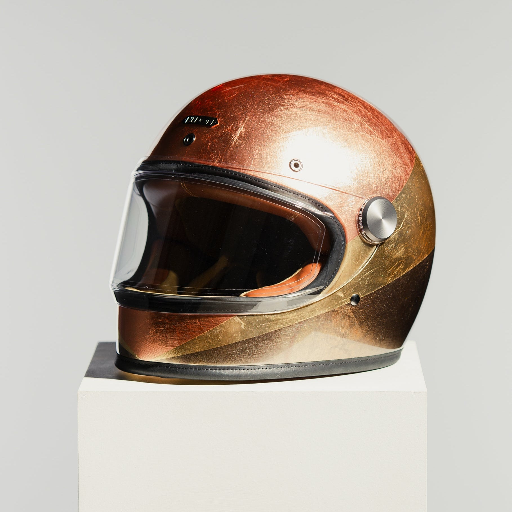
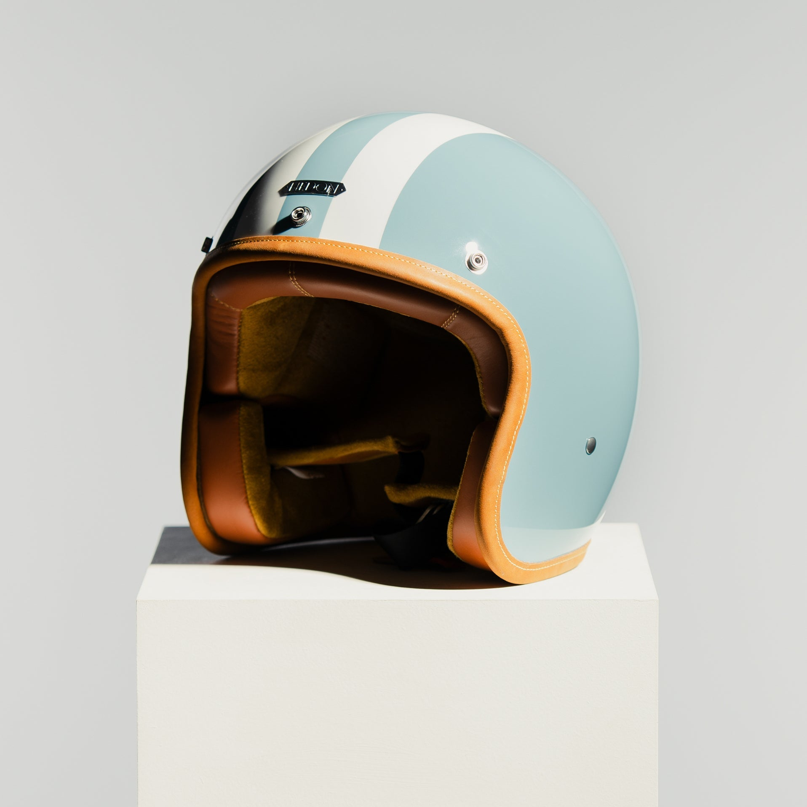
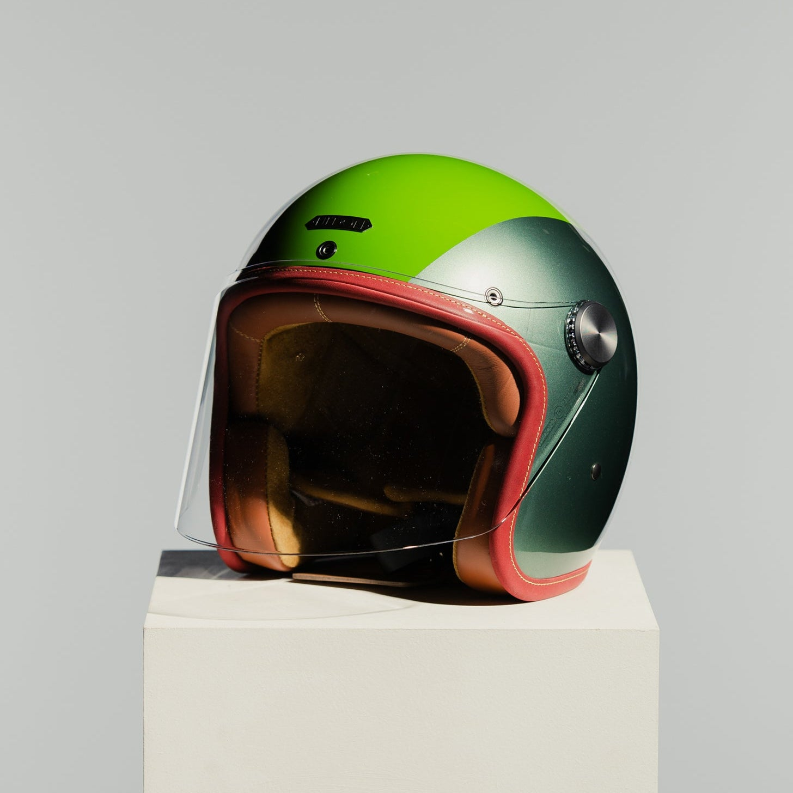

Designing a custom helmet: materials, finishes and what to expect

A custom helmet begins with a simple question: what should it look like on the day you stop noticing it and simply ride? The best custom work is quiet, personal and built on a shell that is already right.
Start with the shape


- Silhouette: choose the shape you will still like in five years.
- Colour and finish: matt, gloss or a hand-applied tone; fewer elements age better.
- Trim: interior and detail choices complete the helmet.
A custom finish should never compromise certification. Personal does not mean altered.
What to expect
| Step | Note |
|---|---|
| Choose | Pick a model and finish with Hedon's custom helmet builder. |
| Fit | Check head size and shape. A helmet should feel snug and even, without pressure points. |
| Certification | Look for ECE 22.06, the current helmet standard. |
| Label | Know what the markings mean: the J and P markings on the label. |
Make it yours
Read more about customising a Hedon helmet, or explore Hedon luxury motorcycle helmets. Back to the Hedon home page.